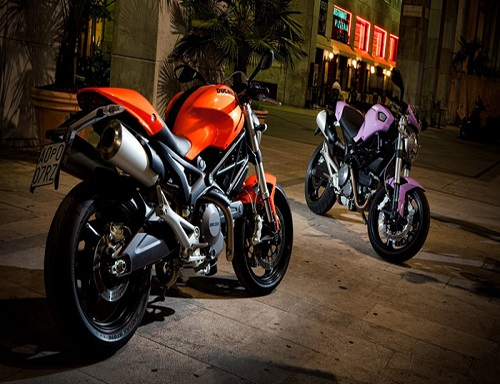

The title on the article
The same period that saw the naked and streetfighter variants of the sport bike theme also had a resurgence of the versatile standard in response to demand for a return of the Universal Japanese Motorcycle.[4][9] Supermoto-style street bikes.
Read More